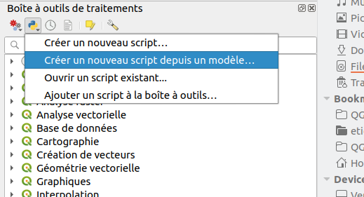
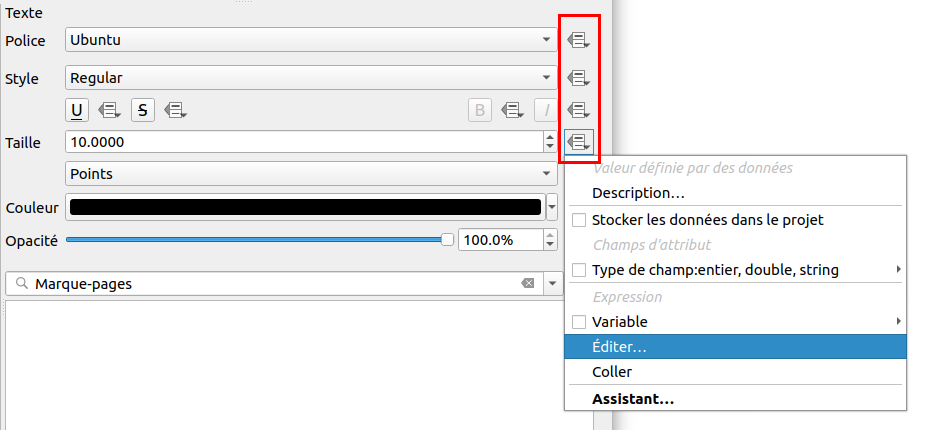
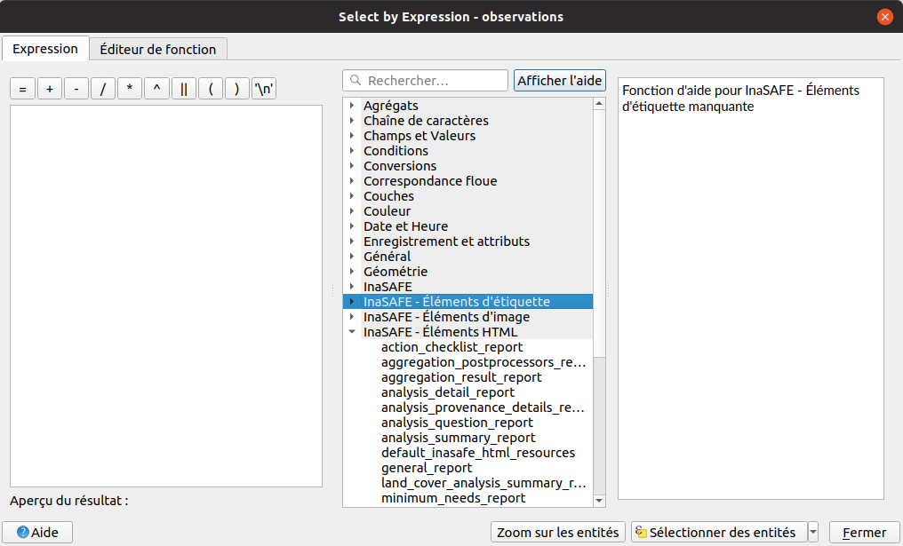

Le python dans QGIS
QGIS permet d'utiliser du Python dans divers emplacement que nous allons voir ci-dessous. Python possède de très nombreux packages/modules disponibles sur internet qui fournissent des fonctions déjà écrites.
Console
La console est accessible par le menu Extension -> Console Python. Elle permet l'écriture de commande
simple, une par une.
On ne peut pas enregistrer les commandes dans un fichier.
Script Python
L'éditeur de script Python est accessible depuis l'icône dédiée dans la console Python. Il permet un prototypage rapide d'un script. On peut y écrire du code plus complexe en faisant intervenir des librairies ou des classes.

Script Processing
Le menu Traitement dans QGIS donne accès a plusieurs algorithmes d'analyse. Ces algorithms proviennent soient de QGIS, GDAL ou encore de plugins. La boîte à outils de traitements ainsi que le modeleur graphique utilisent le "framework" Processing propre à QGIS. Ce framework permet de définir les entrées et les sorties d'un algorithme. Les algorithms sont donc normalisés en suivant tous le même modèle. Processing impose la façon d'écrire les scripts.
Écrire un script compatible QGIS Processing permet l'intégration dans ce menu, permet également l'utilisation de ce-dernier dans un modèle ou encore l'utilisation en mode traitement par lot. Le framework peut aussi générer automatiquement l'interface graphique de l'algorithme et le code est optimisé.
Il existe un modèle par défaut que l'on peut utiliser pour démarrer l'écriture d'un script Processing.
Depuis la barre d'outils traitements, Créer un nouveau script depuis un modèle. Ce modèle utilise la syntaxe
Programmation Orientée Objet. Depuis QGIS 3.6, on peut également utiliser la syntaxe par décorateur @alg.
Voir la documentation https://docs.qgis.org/testing/en/docs/user_manual/processing/scripts.html#the-alg-decorator

Un modèle Processing en Python
Depuis QGIS 3.6, on peut désormais exporter un modèle de traitement Processing en Python. Il faut faire un clic droit sur un modèle dans la boîte à outils puis choisir "Exporter le modèle comme un algorithme Python". On peut donc modifier ensuite ce fichier Python afin de rajouter de la logique supplémentaire.
Extension (plugin)
- Extension côté bureautique et même côté QGIS Serveur.
- La plupart des plugins sont disponibles sur https://plugins.qgis.org pour le téléchargement, ou sinon ils peuvent être installés par un dossier ZIP.
- Afin de développer une extension :
- Utilisation du Plugin Builder
- ou squelette minimum : https://github.com/wonder-sk/qgis-minimal-plugin
- Plugin Reloader permet de simplifier le développement en évitant de recharger QGIS
- Documentation plugin QGIS Serveur : https://docs.qgis.org/testing/en/docs/pyqgis_developer_cookbook/server.html
Fournisseur Processing dans une extension (Processing Provider)
Similaire au script Processing, une extension QGIS peut aussi avoir son propre fournisseur d'algorithme.

On peut remarquer les plugins DataPlotly, QuickOSM etc.
Ajout de Processing à un plugin QGIS : * soit lors du plugin builder * ou manuellement en suivant la documentation pour l'ajout à un plugin existant : https://docs.qgis.org/testing/en/docs/pyqgis_developer_cookbook/processing.html
Il se peut que certaines extensions ne soient que des fournisseurs Processing.
Expressions
Les expressions sont souvent présentes dans QGIS. On peut les utiliser dans nombreux endroits, pour faire des sélections, des conditions, etc. On peut également les utiliser à chaque fois que vous pouvez voir ce symbole : 
Un plugin, ou même simplement un utilisateur, peut enregistrer ses propres expressions. Ci-dessous, le plugin
InaSAFE:

Exemple de code d'une expression :
@qgsfunction(args='auto', group='Custom')
def my_sum(value1, value2, feature, parent):
"""
Calculates the sum of the two parameters value1 and value2.
<h2>Example usage:</h2>
<ul>
<li>my_sum(5, 8) -> 13</li>
<li>my_sum("field1", "field2") -> 42</li>
</ul>
"""
return value1 + value2
Macros
Accessible depuis les propriétés du projet, dans l'onglet Macros. On peut lancer du code Python
automatiquement soit :
* à l'ouverture du projet
* lors de l'enregistrement du projet
* ou lors de sa fermeture
Actions
Les actions sont des petits traitements que l'on peut lancer soit depuis la table attributaire ou depuis le canevas. Par exemple, on peut ouvrir un lien WEB ou un PDF en fonction d'un attribut d'une entité. Il est possible d'écrire les actions en Python.

Formulaire
On peut personnaliser un formulaire par l'ajout de logique Python. Cependant, dans QGIS 3, l'utilisation de Python n'est plus forcément nécessaire, on peut désormais utiliser des expressions (recommandé).

Application/script indépendant
Sans lancer QGIS graphiquement, on peut utiliser la librairie QGIS dans nos scripts Python. On peut donc créer notre propre application graphique ou notre propre exécutable et ainsi utiliser les fonctions de QGIS. On peut donc faire un programme en ligne de commande qui effectue une certaine opération dans un répertoire donné.
le fichier "startup.py"
Si l'on place un fichier nommé startup.py dans le dossier Python du profil de l'utilisateur, QGIS va le
lancer automatiquement à chaque ouverture de QGIS.